| Name | Image | Rarity | Type | Cost | Description |
|---|
| Corporeate |  | Basic | Skill | 1 | thevacant:Mill 5 (8). Gain Block for each card thevacant:Milled. thevacant:Return 1 card. |
| Defend | 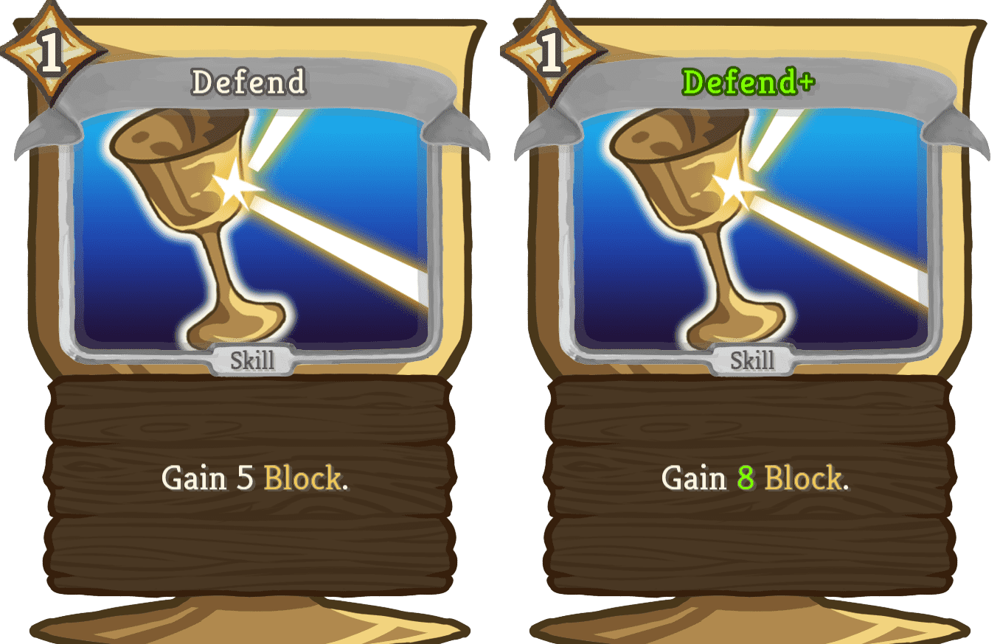 | Basic | Skill | 1 | Gain 5 (8) Block. |
| Soul Bash |  | Basic | Attack | 0 | thevacant:Ricochet. Deal 3 (4) damage. Gain 3 (4) Vigor. |
| Strike |  | Basic | Attack | 1 | Deal 6 (9) damage. |
| Battle Scars | 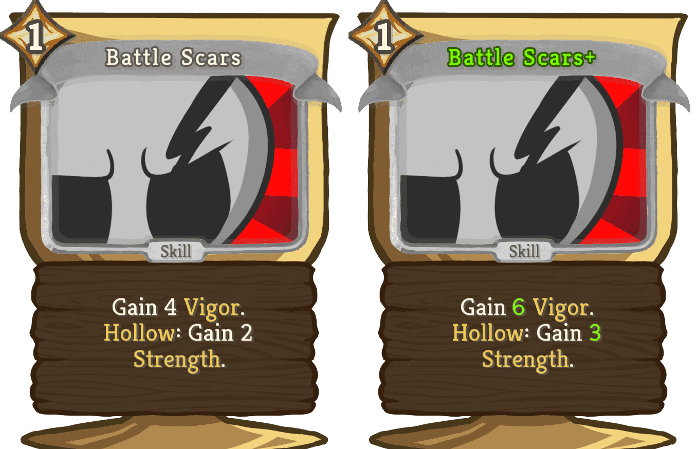 | Common | Skill | 1 | Gain 4 (6) Vigor. thevacant:Hollow: Gain 2 (3) Strength. |
| Brass Magnet |  | Common | Attack | 0 | thevacant:Ricochet. Deal 14 (18) damage. Whenever you draw this card, discard it. |
| Cower |  | Common | Skill | 1 | Gain 7 (9) Block. thevacant:Hollow: Gain 7 (9) Block again. |
| Dig | 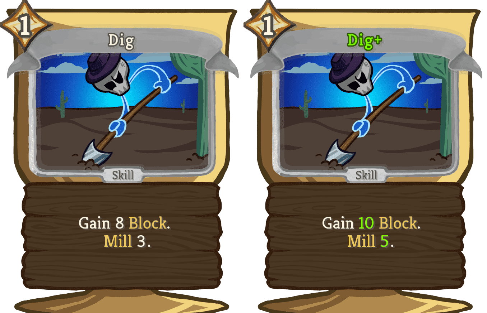 | Common | Skill | 1 | Gain 8 (10) Block. thevacant:Mill 3 (5). |
| Doomed |  | Common | Attack | 1 | Deal 14 (18) damage. Gain 2 thevacant:Doom this turn. |
| Eye "Poke" |  | Common | Attack | 1 (0) | Deal 2 damage 2 times. Apply 2 Weak. |
| Fling | 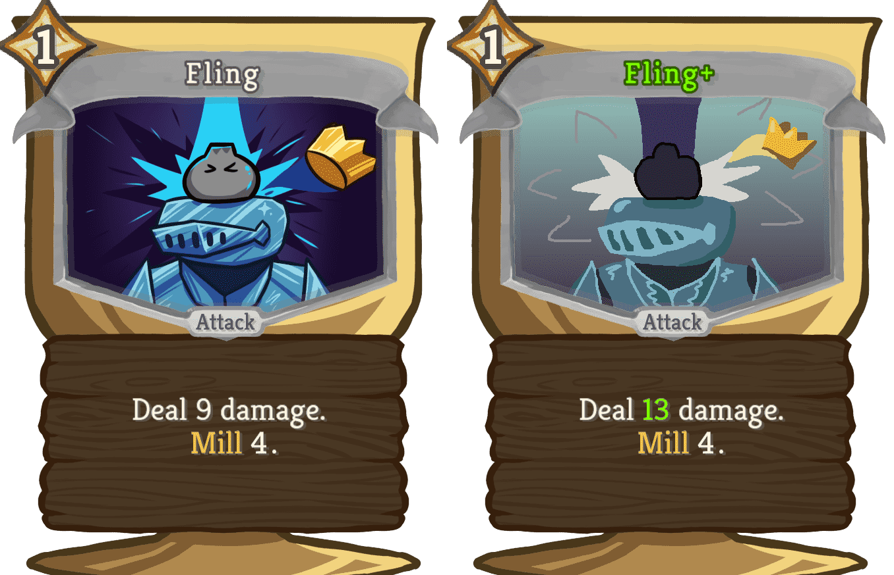 | Common | Attack | 1 | Deal 9 (13) damage. thevacant:Mill 4. |
| Frantic Blow | 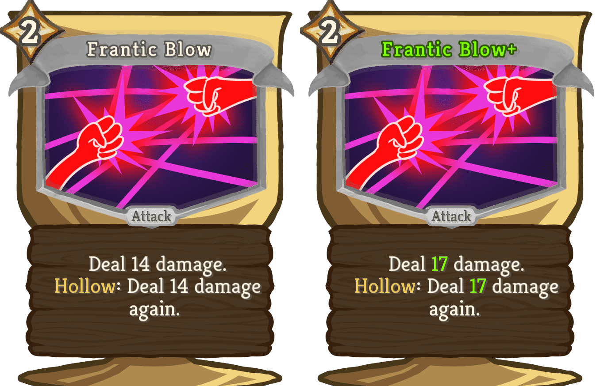 | Common | Attack | 2 | Deal 14 (17) damage. thevacant:Hollow: Deal 14 (17) damage again. |
| Grave Wave | 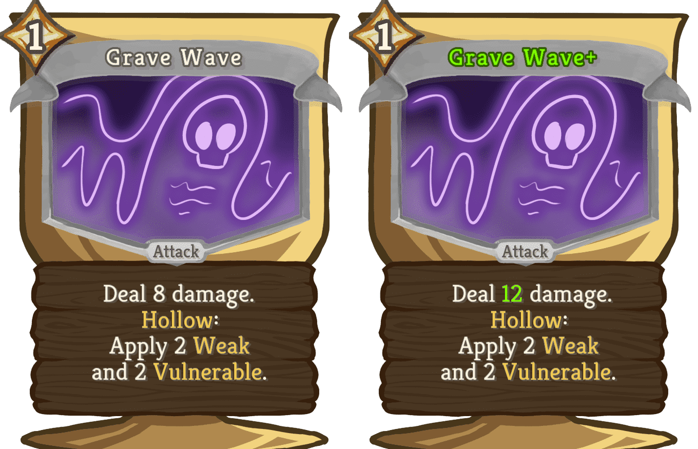 | Common | Attack | 1 | Deal 8 (12) damage. thevacant:Hollow: Apply 2 Weak and 2 Vulnerable. |
| Jab |  | Common | Attack | 0 | thevacant:Ricochet. Deal 5 (7) damage. Shuffle this card into your draw pile. |
| Partake | 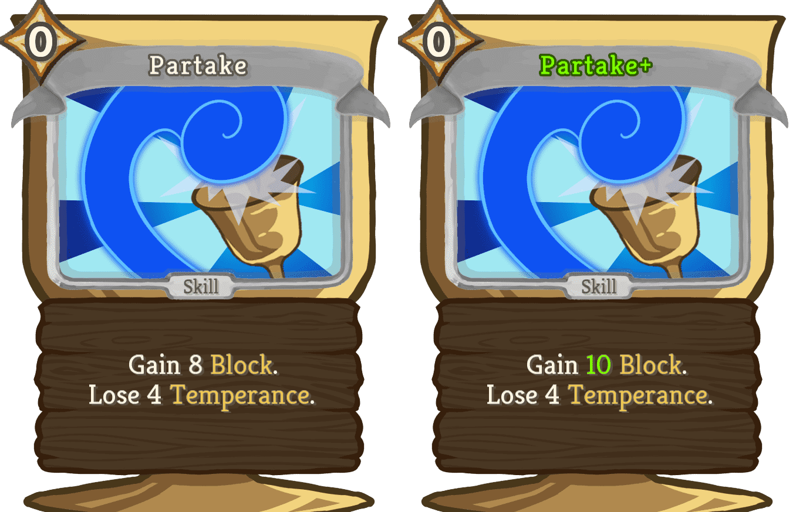 | Common | Skill | 0 | Gain 8 (10) Block. Lose 4 thevacant:Temperance. |
| Pickaxe |  | Common | Attack | 1 | Deal 4 (6) damage twice. thevacant:Chip your next thevacant:Gem. |
| Ruby Rage | 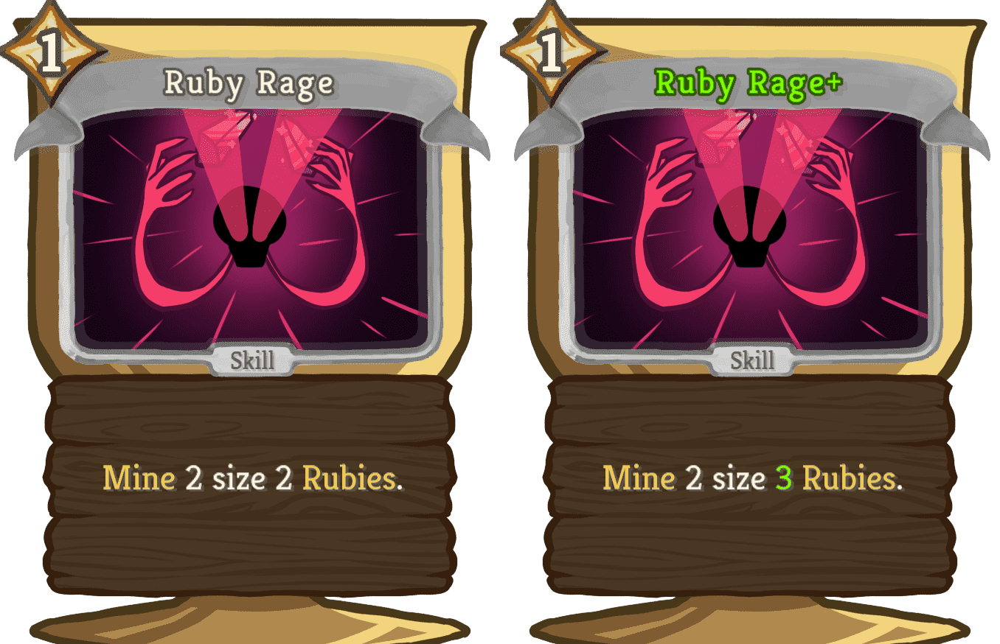 | Common | Skill | 1 | thevacant:Mine 2 size 2 (3) thevacant:Rubies. |
| Sapphire Strike |  | Common | Attack | 1 | Deal 6 (8) damage. thevacant:Mine a size 3 (4) thevacant:Sapphire. |
| Shrieking Blast |  | Common | Attack | 1 | (Voidbound.)Deal 3 damage to ALL enemies 2 times. |
| Thoughtseize |  | Common | Attack | 1 | Deal 10 (12) damage. thevacant:Return 1 (2) card(s). |
| Treasure |  | Common | Skill | 0 | thevacant:Mine a size 1 thevacant:Emerald and a size 1 thevacant:Opal. Exhaust. (not Exhaust.) |
| Vlaze |  | Common | Attack | 0 | Voidbound. Deal 4 (6) damage. Gain 1 (2) Void. Exhaust. |
| Wear the Goblet |  | Common | Skill | 2 | thevacant:Ricochet. Gain 12 (16) Block. When you thevacant:Mill this card, it costs 0 this turn. |
| Acceptance | 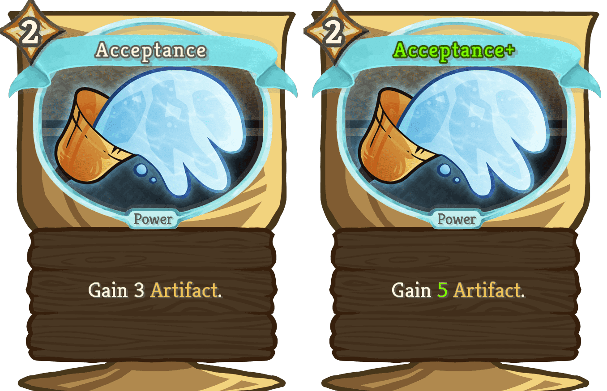 | Uncommon | Power | 2 | Gain 3 (5) Artifact. |
| Aw Man | 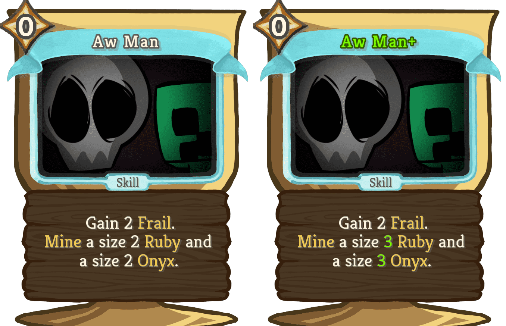 | Uncommon | Skill | 0 | Gain 2 Frail. thevacant:Mine a size 2 (3) thevacant:Ruby and a size 2 (3) thevacant:Onyx. |
| Back in the Mine |  | Uncommon | Attack | 3 | Deal 13 (17) damage to ALL enemies. Costs 1 less this turn for each thevacant:Gem you have. |
| Burden Break |  | Uncommon | Power | 1 | Whenever you take unblocked damage or gain a debuff, gain 3 (4) Vigor. |
| Cleanse Soul |  | Uncommon | Power | 0 | (Innate.)Gain 4 (5) thevacant:Temperance. Whenever you thevacant:Mill a Status or Curse, Exhaust it. |
| Cracked Reflection |  | Uncommon | Power | 2 | Whenever you thevacant:Mine a thevacant:Gem, thevacant:Chip it (!M! times). |
| Cursed Blast |  | Uncommon | Attack | 1 | (Voidbound.)thevacant:Unnate. Deal 10 damage to ALL enemies. Gain 2 Void. |
| Desperation |  | Uncommon | Skill | 1 (0) | Choose a card. Add a copy to your hand. thevacant:Hollow: It costs 0 this turn. |
| Embrace Darkness | 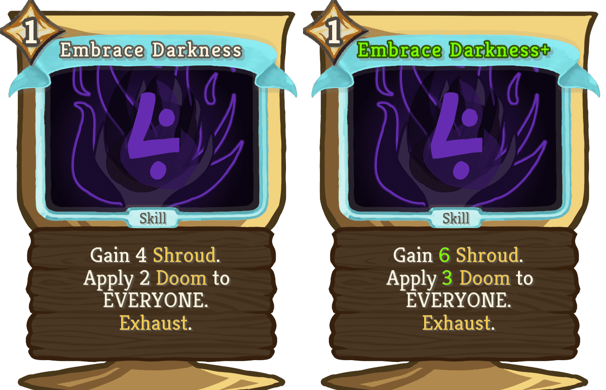 | Uncommon | Skill | 1 | Gain 4 (6) thevacant:Shroud. Apply 2 (3) thevacant:Doom to EVERYONE. Exhaust. |
| Emerald Splash |  | Uncommon | Attack | 0 | Deal 4 (7) damage to ALL enemies. thevacant:Mine a size 2 thevacant:Emerald. |
| Enchant |  | Uncommon | Skill | 2 (1) | Lose your next thevacant:Gem. Give the thevacant:Gem's ability to a card in your hand for the rest of combat. |
| Gloom |  | Uncommon | Power | 2 | Gain 4 (6) thevacant:Shroud. |
| Hex |  | Uncommon | Skill | 1 | Apply 3 (4) thevacant:Doom. Exhaust. |
| Immaterialize |  | Uncommon | Power | 1 | The next 4 (6) cards you play that Exhaust return to your draw pile 2 turns later. |
| Into the Abyss |  | Uncommon | Power | 2 | Next turn, gain 2 (3) thevacant:Doom. At the start of your turn, apply 2 (3) thevacant:Doom to ALL enemies. |
| Lash Out |  | Uncommon | Attack | 2 (1) | Deal damage equal to your missing HP. Exhaust. |
| Onyx Blaster | 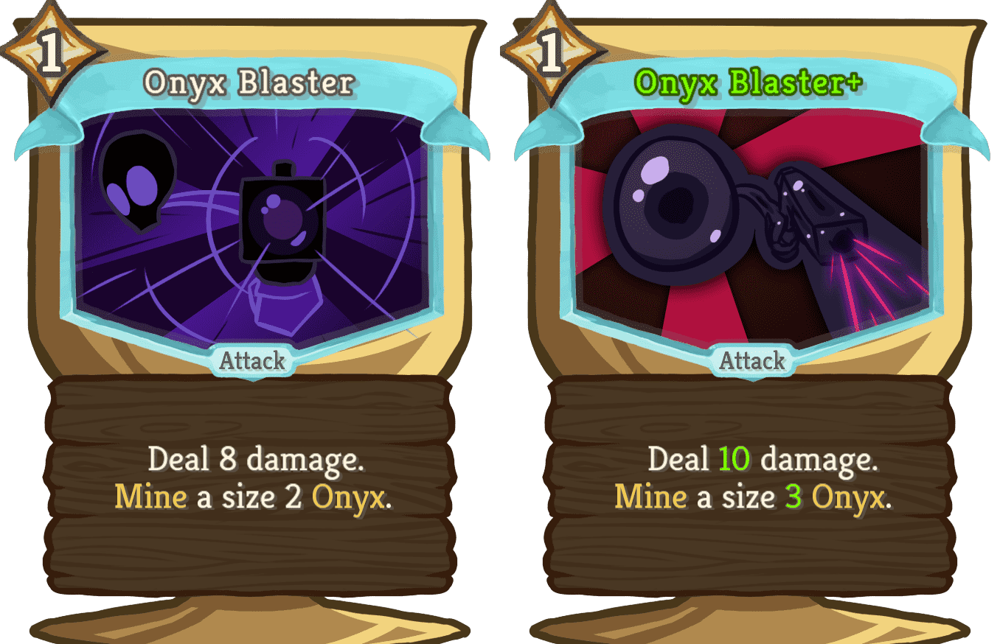 | Uncommon | Attack | 1 | Deal 8 (10) damage. thevacant:Mine a size 2 (3) thevacant:Onyx. |
| Opal Fracture |  | Uncommon | Attack | 2 | Gain 7 (9) Block. Deal 7 (9) damage. thevacant:Mine a size 2 (3) thevacant:Opal. |
| Polish |  | Uncommon | Skill | 1 | Gain 8 Block. Increase the size of ALL of your thevacant:Gems by 1. Exhaust. (not Exhaust.) |
| Reach Through |  | Uncommon | Power | 1 (0) | At the end of your turn, increase the size of your first 2 thevacant:Gems. Gain 2 thevacant:Antifact. |
| Reaper Blast | 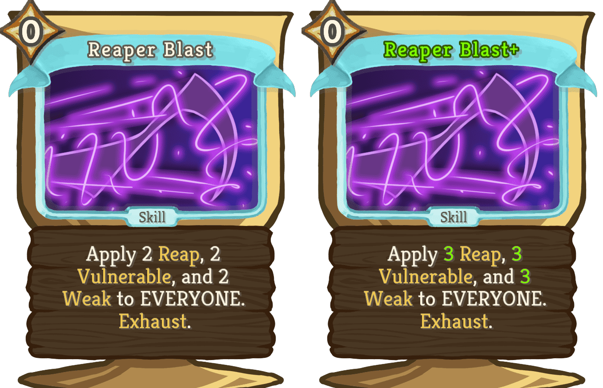 | Uncommon | Skill | 0 | Apply 2 (3) thevacant:Reap, 2 (3) Vulnerable, and 2 (3) Weak to EVERYONE. Exhaust. |
| Reaper Strike | 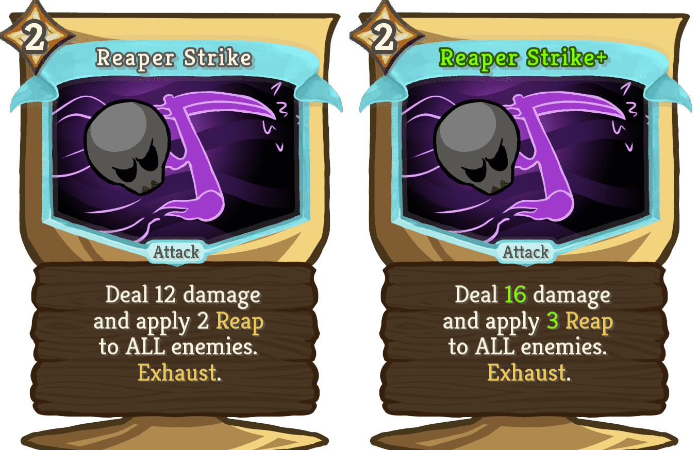 | Uncommon | Attack | 2 | Deal 12 (16) damage and apply 2 (3) thevacant:Reap to ALL enemies. Exhaust. |
| Recover |  | Uncommon | Power | 1 | At the end of battle, if you are thevacant:Hollow, heal 10 (14) HP. |
| Shatter Amethyst | 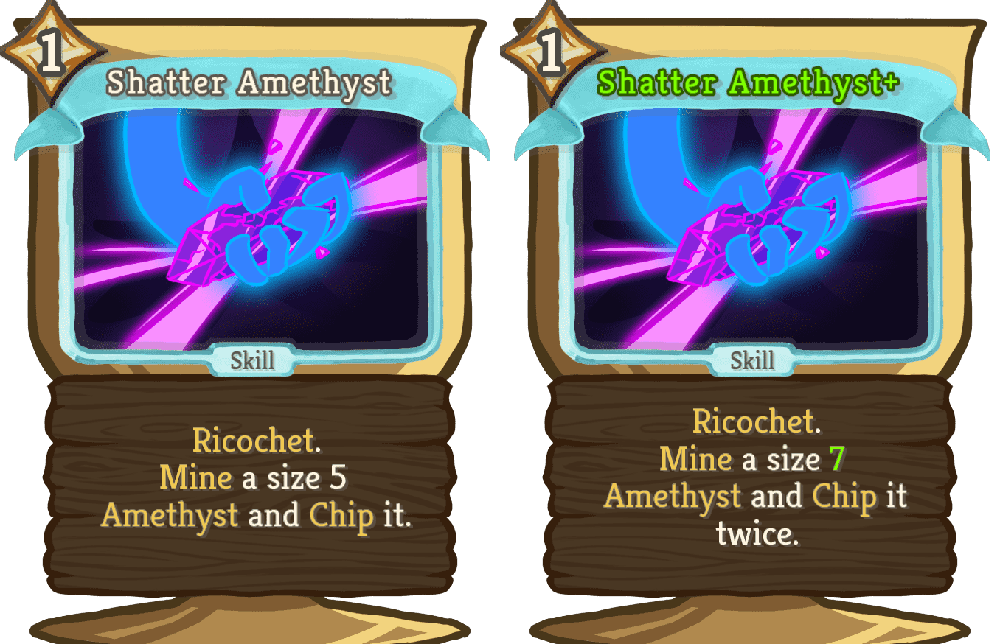 | Uncommon | Skill | 1 | thevacant:Ricochet. thevacant:Mine a size 5 (7) thevacant:Amethyst and thevacant:Chip it (twice). |
| Sneeze | 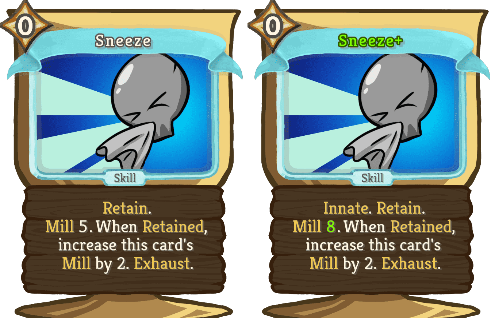 | Uncommon | Skill | 0 | (Innate.) Retain. thevacant:Mill 5 (8). When Retained, increase this card's thevacant:Mill by 2. Exhaust. |
| Soul Barrage | 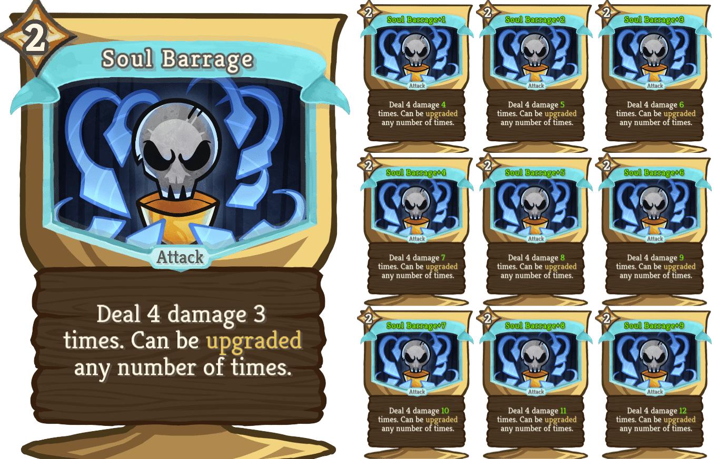 | Uncommon | Attack | 2 | Deal 4 damage 3 (4) times. Can be upgraded any number of times. |
| Spelunk | 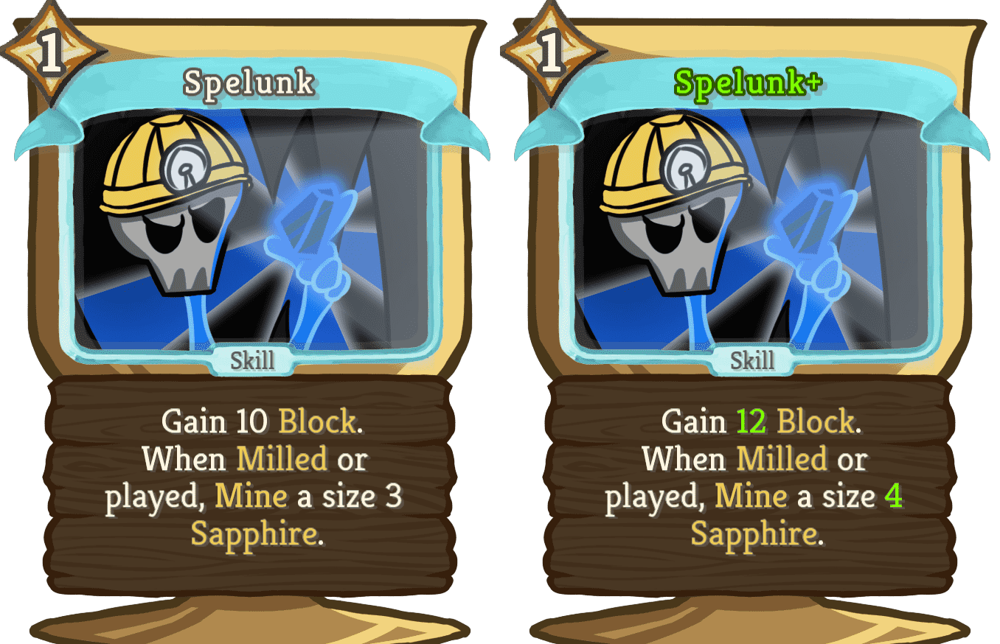 | Uncommon | Skill | 1 | Gain 10 (12) Block. When thevacant:Milled or played, thevacant:Mine a size 3 (4) thevacant:Sapphire. |
| Spinshield |  | Uncommon | Skill | 2 | Gain 5 (7) Block 3 times. |
| Surprise Attack |  | Uncommon | Attack | 0 | thevacant:Unnate. Deal 15 (19) damage. Exhaust. |
| Threaten |  | Uncommon | Attack | 1 | Deal 0 damage 5 (7) times. Exhaust. |
| Topaz Frenzy |  | Uncommon | Attack | 2 | Deal 3 (5) damage 3 times. thevacant:Mine a size 2 (3) thevacant:Topaz. Exhaust. |
| Unearth | 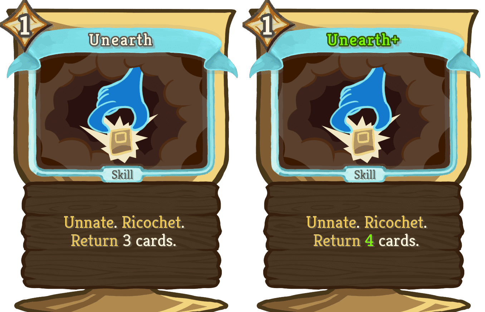 | Uncommon | Skill | 1 | thevacant:Unnate. thevacant:Ricochet. thevacant:Return 3 (4) cards. |
| Void Embrace |  | Uncommon | Power | 1 | thevacant:Unnate (Innate). Whenever a card you play Exhausts, gain 1 Void. |
| Dark Strike | 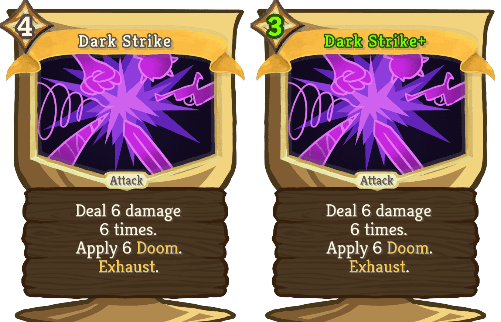 | Rare | Attack | 4 (3) | Deal 6 damage 6 times. Apply 6 thevacant:Doom. Exhaust. |
| Diamond Is Unbreakable |  | Rare | Skill | X | thevacant:Mine X (X+1) size 1 thevacant:Diamonds. Exhaust. |
| Dimension Tear | 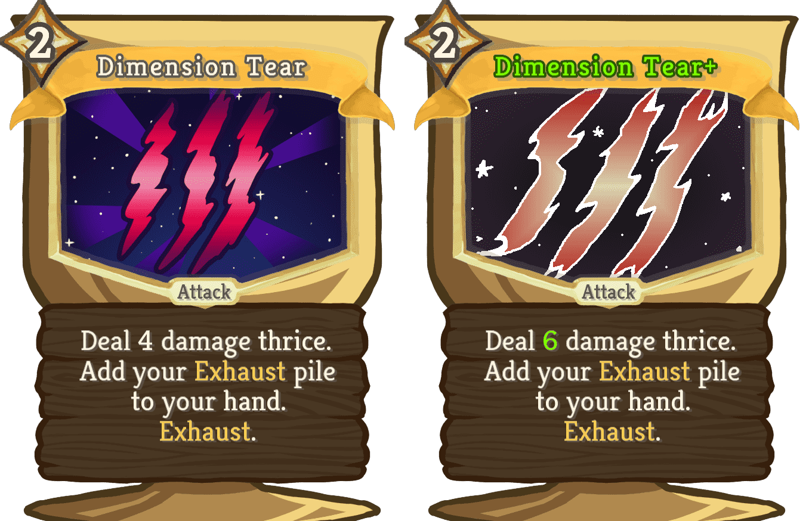 | Rare | Attack | 2 | Deal 4 (6) damage thrice. Add your Exhaust pile to your hand. Exhaust. |
| Empty Shield |  | Rare | Skill | 2 (1) | (thevacant:Ricochet.)Gain Block equal to your missing HP. Exhaust. |
| Essence Of Bismuth | 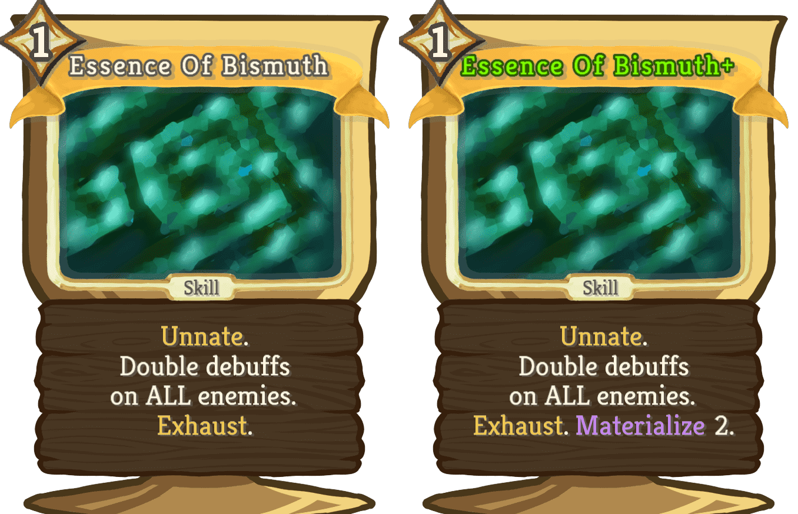 | Rare | Skill | 1 | thevacant:Unnate. Double debuffs on ALL enemies. Exhaust. (Materialize 2.) |
| Exorcise |  | Rare | Skill | 1 | Remove all your Debuffs (and apply them to ALL enemies). Exhaust. |
| Forge Soul |  | Rare | Power | 1 (0) | Innate. Whenever you thevacant:Mill a card, Upgrade it for the rest of combat. |
| From Nothing |  | Rare | Skill | 2 (1) | Innate. thevacant:Mill your draw pile. Exhaust. |
| Gilded Pickaxe | 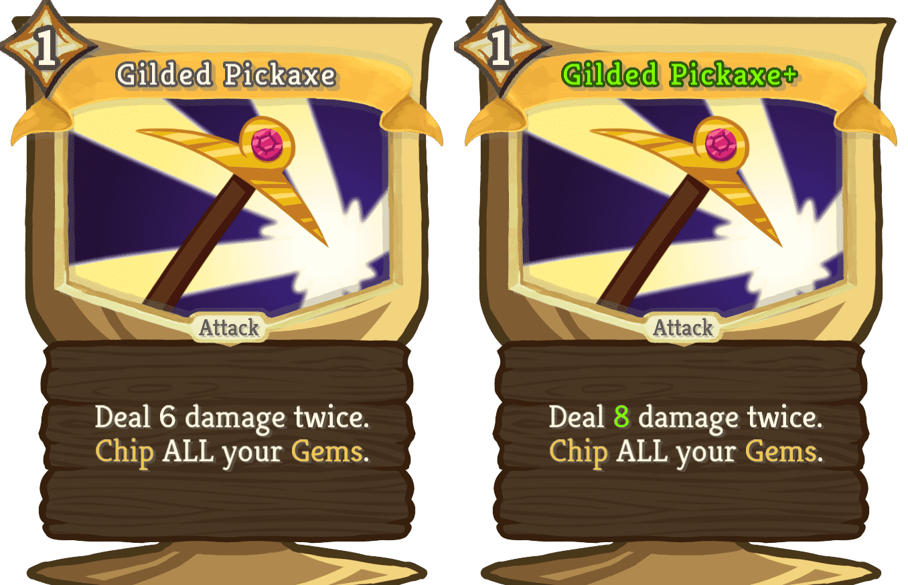 | Rare | Attack | 1 | Deal 6 (8) damage twice. thevacant:Chip ALL your thevacant:Gems. |
| Memoria |  | Rare | Skill | 1 | thevacant:Ricochet. The next (2) time(s) you play a card that Exhausts this turn, play it twice. |
| Rejection |  | Rare | Power | 2 | Gain 5 (7) Strength, 2 Frail, and 2 thevacant:Antifact. |
| Requiem | 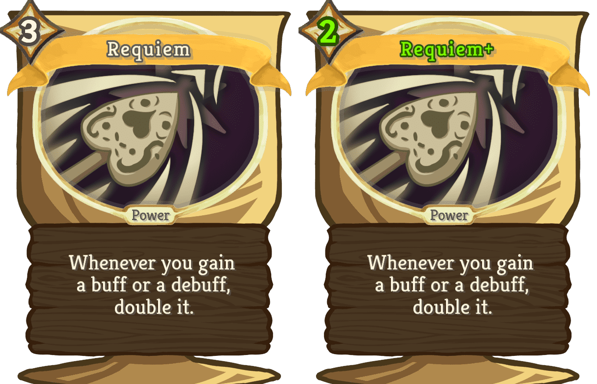 | Rare | Power | 3 (2) | Whenever you gain a buff or a debuff, double it. |
| Runic Thoughts |  | Rare | Power | 1 (0) | (thevacant:Ricochet.)Cards that cost 1 or less thevacant:Ricochet. |
| Showdown |  | Rare | Attack | 2 | Deal 16 (22) damage to ALL enemies. Play your next attack twice. Apply 4 thevacant:Doom to EVERYONE. |
| Steal Soul |  | Rare | Attack | 2 | Deal 20 (25) damage. Steal the enemy's Artifact and Strength. (Apply !M! thevacant:Antifact.)Exhaust. |
| The Anvil | 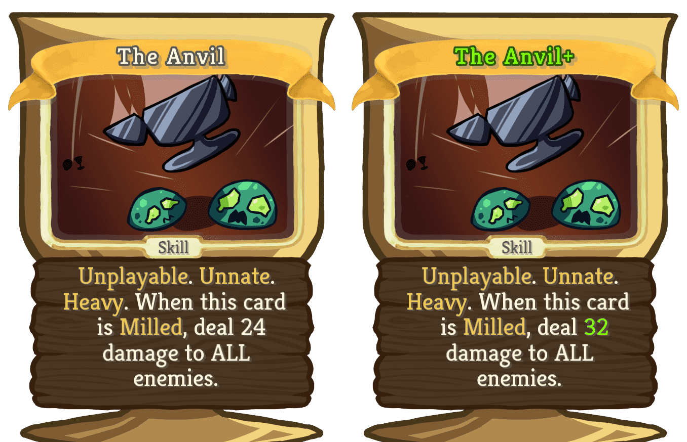 | Rare | Skill | | Unplayable. thevacant:Unnate. thevacant:Heavy. When this card is thevacant:Milled, deal 24 (32) damage to ALL enemies. |
| Time Skip |  | Rare | Skill | 3 | (Draw !M! cards.)All cards in your hand cost 0 and Exhaust. Exhaust. |
| Void Form |  | Rare | Power | 3 | Gain 6 (8) Void. At the start of your turn, thevacant:Mill 6 (8). |
| Voidstone |  | Rare | Skill | 1 | Voidbound. Gain 3 Block twice. Choose a (ALL) card(s) to (in your hand) become Voidbound. Exhaust. |
| Name | Image | Tier | Pool | Description | Flavor |
|---|
| Brass Goblet | 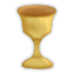 | Starter | Vacant_color | At the start of combat, gain 2thevacant:Void. | An ancient artifact with dark power. |
| Locket Piece | | Common | Vacant_color | After a card thevacant:Ricochets, gain 4Block. | A reminder of a life lost. Or at least, a piece of one. |
| Deathbell | 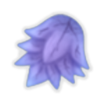 | Uncommon | Vacant_color | At the start of each combat, if you are thevacant:Hollow, gain 10 Temporary_HP. | The scent invokes a feeling of dread. |
| Polishing Rag | 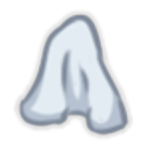 | Rare | Vacant_color | At the end of your turn, increase the size of your 3 rightmost thevacant:Gems. | Shiny gems are more powerful, everyone knows this. |
| Bound Soul |  | Boss | Vacant_color | Gain [E] at the start of your turn if you are thevacant:Hollow. | As death closes in, the artifact's hold on you weakens, and you feel your power grow. |
| Overflowing Goblet |  | Boss | Vacant_color | Replaces BrassGoblet. At the start of combat, gain 2Artifact. | An ancient artifact, now overflowing with dark power. |
| Tombstone |  | Boss | Vacant_color | At the start of combat, after you draw, thevacant:Mill your draw pile and trigger TheGoblet's ability again. | Just as we all go to the grave eventually, all cards go to the discard pile eventually. |
| Cracked Crystal Ball |  | Shop | Vacant_color | Exhausted cards return to your draw pile after 2 turns. | Sometimes magic leaking into the world is more powerful than when it is contained. |
| Name | Description |
|---|
| Amethyst | Gem:Mill3. |
| Antifact | Negates the next buff. |
| Chip | Trigger the effect and reduce the size of a Gem. |
| Darkness | Whenever a debuff is applied to this target, increase its amount. |
| Diamond | Gem: Prevent the next time you would take damage and lose 1 size. |
| Doom | Creatures take more damage for each Doom they have. |
| Emerald | Gem: Draw 1 card. |
| Everyone | ALL enemies and you. |
| Gem | Gems are Orbs that reduce in size at the start of your turn. |
| Heavy | When your deck is reshuffled, move to the bottom of the draw pile. |
| Hollow | Hollow effects trigger if you are at or below 50% of your max health, OR if you have at least 2 unique debuffs. |
| [#C687EE]Materialize[] | If this card is Exhausted, it loses 1 Materialize at the end of your turn. Once all Materialize is lost, this card is moved to the top of your draw pile. |
| Mill | Move an amount of cards from the top of your draw pile to your discard pile. |
| Mine | Create an orb slot and fill it with a Gem, which loses size at the start of your turn. |
| Onyx | Gem: Apply 1Doom to ALL enemies. |
| Opal | Gem: Gain [E] |
| Polish | Increase the size of a Gem. |
| Reap | Heal this much HP when you attack this target. Removed at the start of your next turn. |
| Return | Move the top playable card from your discard pile to your hand. |
| Ricochet | If this card would be Milled, add it to your hand instead of the discard pile. |
| Ruby | Gem: Gain 3Vigor. |
| Sapphire | Gem: Gain 3Temperance. |
| Shroud | Halve incoming damage. Reduced by 1 at the start of your turn, and whenever you play an attack. |
| Temperance | The next time you Block, gain additional Block. |
| Topaz | Gem: Gain 1Artifact. |
| Unnate | Starts each combat at the bottom of your draw pile. |
| [#ee82ee]Void[] | When your draw pile is empty, deal more damage and gain more Block. |
| [#ee82ee]Voidbound[] | Void affects this card regardless of if your draw pile is empty. |
{kind=link}
{kind=link}
{kind=link}
{kind=link}
{kind=link}
{kind=link}
{kind=link}
{kind=link}
{kind=link}
{kind=link}
{kind=link}
{kind=link}
{kind=link}
{kind=link}
{kind=link}
{kind=link}
{kind=link}
{kind=link}
{kind=link}
{kind=link}
{kind=link}
{kind=link}
{kind=link}
{kind=link}
{kind=link}